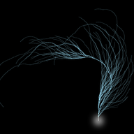
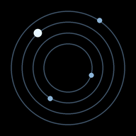
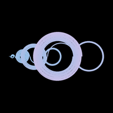

Conjecturas
Problemas de matemática ainda sem prova, ou regras simples com comportamento inesperado, transformados em som e luz. Cada obra abre em tela cheia, toca sozinha e pode ir para a tela inicial do celular ou do iPad. O painel fica no ponto do canto (tecla M).

GranizoConjectura de Collatz · 3n + 1Todo número volta ao 1: cada um vira um galho de luz, e os caminhos formam um coral.

Corredor SolitárioConjectura do corredor solitárioCorredores numa pista circular em polirritmia: cada um, uma hora, fica sozinho.

Formiga de LangtonAutômato celularDez mil passos de caos e, de repente, uma rodovia que vira groove.

RecamánSequência de RecamánPara trás se puder, para a frente se não: arcos e uma melodia assombrada.

KolakoskiConjectura de KeaneUma sequência que descreve a si mesma, tocada como cânone rítmico.

Cometa de GoldbachConjectura de GoldbachTodo par é soma de dois primos: cada número vira um acorde de anéis.
Os endereços antigos (por exemplo /granizo/) continuam funcionando e levam para cá.